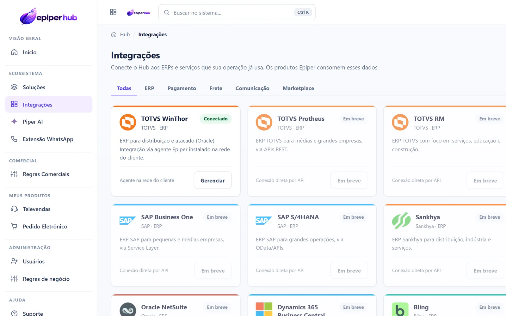

TOTVS WinThor
Integração conectada ao núcleo Epiper para operações de atacado, distribuição e varejo.
A Epiper funciona como uma camada entre os canais comerciais e o ERP. O WinThor TOTVS já faz parte da operação atual; outros sistemas são avaliados por API, banco de dados, arquivos ou conectores antes de confirmar escopo e disponibilidade.
Viabilidade confirmada após análise técnica do seu ambiente.
No Hub, quem administra vê quais ERPs e serviços estão conectados e quais ainda estão em avaliação. O WinThor TOTVS opera por um agente instalado na rede do cliente.

Dados ilustrativos.
O WinThor é a integração ERP já conectada hoje. Os demais nomes abaixo representam possibilidades técnicas que ainda precisam de análise e, quando necessário, implementação específica.
Integração conectada ao núcleo Epiper para operações de atacado, distribuição e varejo.
Ecossistema amplamente presente no varejo. Integração sujeita à análise técnica do ambiente.
Cenário possível de avaliação conforme recursos técnicos disponibilizados pelo ERP.
ERP em nuvem que pode ser estudado conforme APIs e necessidades do projeto.
Plataforma de gestão para varejo e comércio digital, sujeita à validação de integração.

Ambientes SAP também podem ser avaliados conforme arquitetura, escopo e interfaces disponíveis.
O escopo final depende do ERP e do projeto, mas a camada de integração pode trabalhar com os principais dados comerciais necessários aos produtos Epiper.
Cadastro, situação e informações necessárias ao atendimento e ao pedido.
Itens, descrições e informações comerciais usadas pelos canais digitais.
Disponibilidade comercial conforme o cenário e as regras da empresa.
Tabelas, condições e regras que precisam acompanhar a venda.
Envio do pedido para processamento no ambiente da empresa.
Acompanhamento do processamento e retorno das informações do pedido.
A Epiper já possui operação conectada ao WinThor TOTVS. Para outros ERPs, a análise técnica considera dados disponíveis, autenticação, frequência de atualização, regras do pedido e o conector que precisa ser implementado ou adaptado.
Preferíveis quando o ERP disponibiliza endpoints adequados, autenticação e regras compatíveis com o fluxo necessário.
MétodoPode ser considerado quando existe acesso controlado, estrutura conhecida e uma estratégia segura de leitura ou integração.
MétodoImportação, exportação ou processamento por arquivos pode atender cenários específicos e sistemas legados.
MétodoWinThor está conectado; os demais ERPs entram após confirmar viabilidade e implementar ou adaptar a ponte necessária.
Situação realFuncionalidade, integração e processo precisam caminhar juntos. Estes são os pontos que mais influenciam a qualidade do projeto e a adoção da equipe.
A arquitetura aceita outros conectores, mas disponibilidade no site não significa integração pronta. Cada ERP e infraestrutura precisam ser avaliados antes de confirmar prazo, escopo e automações.
Nem todo ERP possui a mesma arquitetura. Por isso, a Epiper avalia o cenário técnico e define a estratégia adequada para cada implantação.
Integrações via serviços e endpoints quando o ERP ou a infraestrutura oferece APIs para troca de dados.
Conectores controlados para leitura e sincronização conforme permissões e arquitetura do ambiente.
Outros formatos podem ser avaliados quando fazem parte do processo atual da empresa.
Clientes, produtos, preço, estoque e regras comerciais.
Os dados são apresentados ao Pedido Eletrônico ou ao Televendas.
O usuário trabalha em um fluxo moderno e padronizado.
Pedido, processamento e status voltam a conversar com a operação.
A integração é adaptada ao cenário técnico de cada empresa. O WinThor já está conectado; nos demais ambientes, estudamos APIs, banco, arquivos ou conectores específicos antes de confirmar a solução.
Informe qual sistema sua empresa utiliza e como os pedidos são processados hoje. A partir daí, avaliamos o caminho técnico mais adequado.
A integração WinThor conecta o TOTVS WinThor à Epiper por um agente instalado na rede do cliente, e a integração com ERP de outros sistemas é avaliada por API de integração, banco de dados, arquivos ou conectores. O objetivo é integrar o ERP com o Pedido Eletrônico e o Televendas, com sincronização de pedidos e retorno de status quando disponíveis, sem refazer o que já funciona.